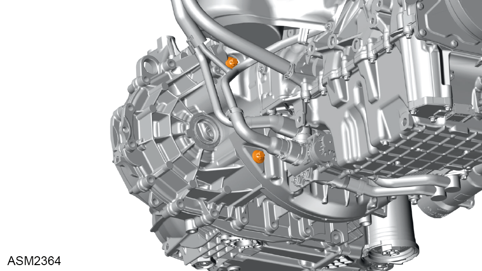

Transmission Assembly - 4 Cylinder
Print
Operation Code: 47.02.01-01
Important Information
 WARNING: Transmission oil is a toxic substance and can be lethal if ingested. Wear protective gloves, protective clothing and safety glasses.
WARNING: Transmission oil is a toxic substance and can be lethal if ingested. Wear protective gloves, protective clothing and safety glasses.
Removal
- Remove engine assembly. Refer to procedure.
- Remove starter motor. Refer to procedure.
- Install lifting device (7) to transmission (1).
- Attach a suitable hoist to lifting device and slightly raise transmission.

- Remove bolts (x2) securing transmission to engine. Torque 39 Nm.
- Remove bolts (x3) securing transmission to engine. Torque 39 Nm.
- Remove bolts (x2) securing transmission to engine. Torque 39 Nm.
- Remove bolts (x3) securing transmission to engine. Torque 39 Nm.
- Remove stud securing transmission to engine. Torque 39 Nm.
- Using assistance remove transmission assembly.
Installation
- Installation is the reverse of removal procedure except for the following:
- Inspect dowel pins for damage, renew if necessary.
- Apply grease to teeth of driveshaft.